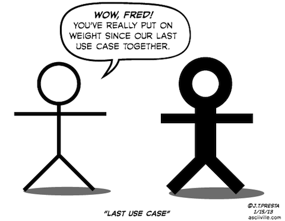

diagramize it
Taras Kalapun

Types of diagrams
Block diagrams

Use Cases

Activity

Sequence

Block diagrams
yuml.me
[Customer]<>-orders*>[Order]
[Order]++-0..*>[LineItem]
[Order]-[note:Aggregate root.]blockdiag
blockdiag {
A -> B -> C -> D;
A -> E -> F -> G;
}
blockdiag
blockdiag {
WeatherApi [shape = ellipse];
AdMob [shape = ellipse];
Cloud [shape = cloud];
User [shape = actor];
WeatherApi -> Cloud
AdMob -> Cloud
Cloud -> App
App -> User
}
Graphviz

Graphviz
digraph G {
ranksep = 1
rankdir = TD
node [
shape = "record"
height = 0.50
fontsize = 10
margin = 0.20,0.05
]
A2 [
label = "Customer]"
style = "filled"
fillcolor = ""
]
node [
shape = "record"
height = 0.50
fontsize = 10
margin = 0.20,0.05
]
A48 [
label = "Order]"
style = "filled"
fillcolor = ""
]
edge [
shape = "edge"
dir = "both"
style = "solid"
arrowtail = "odiamond"
taillabel = "1"
arrowhead = "vee"
headlabel = ">"
labeldistance = 2
fontsize = 10
]
A2 -> A48
node [
shape = "record"
height = 0.50
fontsize = 10
margin = 0.20,0.05
]
A94 [
label = "LineItem]"
style = "filled"
fillcolor = ""
]
edge [
shape = "edge"
dir = "both"
style = "solid"
arrowtail = "diamond"
taillabel = "*"
arrowhead = "vee"
headlabel = ">"
labeldistance = 2
fontsize = 10
]
A48 -> A94
node [
shape = "record"
height = 0.50
fontsize = 10
margin = 0.20,0.05
]
A143 [
label = "DeliveryMethod]"
style = "filled"
fillcolor = ""
]
edge [
shape = "edge"
dir = "both"
style = "solid"
arrowtail = "none"
taillabel = ""
arrowhead = "vee"
headlabel = ">"
labeldistance = 2
fontsize = 10
]
A48 -> A143
node [
shape = "record"
height = 0.50
fontsize = 10
margin = 0.20,0.05
]
A199 [
label = "Product]"
style = "filled"
fillcolor = ""
]
edge [
shape = "edge"
dir = "both"
style = "solid"
arrowtail = "none"
taillabel = "*"
arrowhead = "vee"
headlabel = ">"
labeldistance = 2
fontsize = 10
]
A48 -> A199
node [
shape = "record"
height = 0.50
fontsize = 10
margin = 0.20,0.05
]
A248 [
label = "Category"
style = "filled"
fillcolor = ""
]
A298 [
label = "National"
style = "filled"
fillcolor = ""
]
A348 [
label = "International"
style = "filled"
fillcolor = ""
]
A143 -> A298 -> A348 -> A248
}Use Case diagrams
yuml.me
[Customer]-(Make Cup of Tea)
(Make Cup of Tea)<(Add Milk)
(Make Cup of Tea)>(Add Tea Bag)
Graphviz
digraph G {
rankdir=LR;
subgraph clusterUser {label="User"; labelloc="b"; peripheries=0; user};
user [shapefile="stick.png", peripheries=0, style=invis];
login [label="Log In", shape=ellipse];
user->login [arrowhead=none];
}
http://martin.elwin.com/blog/2008/05/uml-use-case-diagrams-graphviz/
Graphviz

Activity diagrams
yuml.me
(start)->|a|
|a|->(Make Coffee)->|b|
|a|->(Make Breakfast)->|b|
|b|-><c>[want more coffee]->(Make Coffee)
<c>[satisfied]->(end)
GNU Pic
http://floppsie.comp.glam.ac.uk/Glamorgan/gaius/web/pic.html
.PS
ellipse "document";
arrow;
box "\fIgpic\fP(1)"
arrow;
box width 1.2 "\fIgtbl\/\fP(1) or \fIgeqn\/\fP(1)" "(optional)" dashed;
arrow;
box "\fIgtroff\/\fP(1)";
arrow;
ellipse "PostScript"
.PEGraphviz


Graphviz
digraph untitled {
rankdir=TD
size="4,4"
edge[fontsize="11" arrowhead=open]
start[shape=circle, label="", style=filled]
end[shape=doublecircle, label="", style=filled]
action1[shape=box,style=rounded, label="action"]
action2[shape=box,style=rounded, label="action"]
action3[shape=box,style=rounded, label="action"]
if1[shape=diamond, label="decision"]
if2[shape=diamond, label="decision"]
start -> action1
action1 -> if1[headport=n]
if1 -> action2[label="condition" tailport=w]
if1 -> action3[taillabel="condition" labeldistance=2.5 tailport=e]
action2 -> if2[headport=w]
action3 -> if2[headport=e]
if2 -> end[taillabel="condition"]
}actdiag
actdiag {
write -> convert -> image
lane user {
label = "User"
write [label = "Writing reST"];
image [label = "Get diagram IMAGE"];
}
lane actdiag {
convert [label = "Convert reST to Image"];
}
}actdiag

Sequence diagrams
WebSequenceDiagrams
http://websequencediagrams.com
A->+B: text
B-->-A: text
A->B: text2
Seqdiag
http://blockdiag.com/en/seqdiag/
seqdiag {
browser -> webserver [label = "GET /index.html"];
browser <-- webserver;
browser -> webserver [label = "POST /blog/comment"];
webserver -> database [label = "INSERT comment"];
webserver <-- database;
browser <-- webserver;
}Seqdiag
pic2plot
http://projetos.edugraf.ufsc.br/2011/1/convidado/jgzeni/ProjetoFinal/JogoDeCartas/002/bin/src/UMLGraph-5.4/doc/uml-appa.html

brew install plotutils- https://github.com/dspinellis/UMLGraph/blob/master/sequence.pic
pic2plot
.PS
copy "sequence.pic";
boxwid = 1.1;
movewid = 0.5;
# Define the objects
object(C,"c:Client");
pobject(T);
object(P,"p:ODBCProxy");
# Message sequences
step();
active(C);
cmessage(C,T,":Transaction");
oconstraint("{Transient}");
step();
message(C,T,"setActions(a,d,o)");
active(T);
message(T,P,"setValues(d,3.4)");
active(P);
step();
inactive(P);
message(T,P,"setValues(a,\"CO\")");
active(P);
rmessage(T,C,"committed");
inactive(T);
inactive(P);
async(); dmessage(C,T);
step();
inactive(C);
step();
complete(C);
complete(P);
.PEOther cool diagrams
nwdiag

nwdiag
nwdiag {
network dmz {
address = "210.x.x.x/24"
// set multiple addresses (using comma)
web01 [address = "210.x.x.1, 210.x.x.20"];
web02 [address = "210.x.x.2"];
}
network internal {
address = "172.x.x.x/24";
web01 [address = "172.x.x.1"];
web02 [address = "172.x.x.2"];
db01;
db02;
}
}rackdiag

rackdiag
rackdiag {
// define height of rack
16U;
// define rack items
1: UPS [2U];
3: DB Server
4: Web Server 1 // put 2 units to rack-level 4
4: Web Server 2
5: Web Server 3
5: Web Server 4
7: Load Balancer
8: L3 Switch
}ASCII ditaa
http://ditaa.sourceforge.net
+--------+ +-------+ +-------+
| | --+ ditaa +--> | |
| Text | +-------+ |diagram|
|Document| |!magic!| | |
| {d}| | | | |
+---+----+ +-------+ +-------+
: ^
| Lots of work |
+-------------------------+
Graphviz IC

Graphviz IC
digraph G {
graph [rankdir = LR];
node[shape=record];
Bar[label="{ \"Bar\"|{<p1>pin 1|<p2> 2|<p3> 3|<p4> 4|<p5> 5} }"];
Foo[label="{ {<data0>data0|<data1>data1|<data2>data2|<data3>data3|<data4>data4}|\"Foo\" |{<out0>out0|<out1>out1|<out2>out2|<GND>gnd|<ex0>ex0|<hi>hi|<lo>lo} }"];
Bew[label="{ {<clk>clk|<syn>syn|<mux0>mux0|<mux1>mux1|<signal>signal}|\"Bew\" |{<out0>out0|<out1>out1|<out2>out2} }"];
Bar:p1 -> Foo:data0;
Bar:p2 -> Foo:data1;
Bar:p3 -> Foo:data2;
Bar:p4 -> Foo:data3;
Bar:p5 -> Foo:data4;
Foo:out0 -> Bew:mux0;
Foo:out1 -> Bew:mux1;
Bew:clk -> Foo:ex0;
Gate[label="{ {<a>a|<b>b}|OR|{<ab>a\|b} }"];
Foo:hi -> Gate:a;
Foo:lo -> Gate:b;
Gate:ab -> Bew:signal;
}